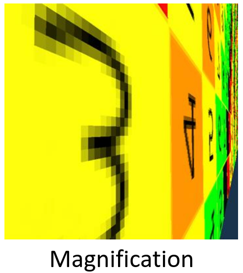
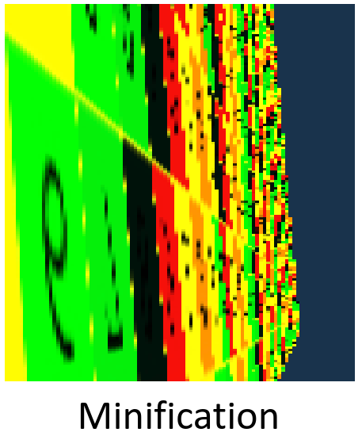
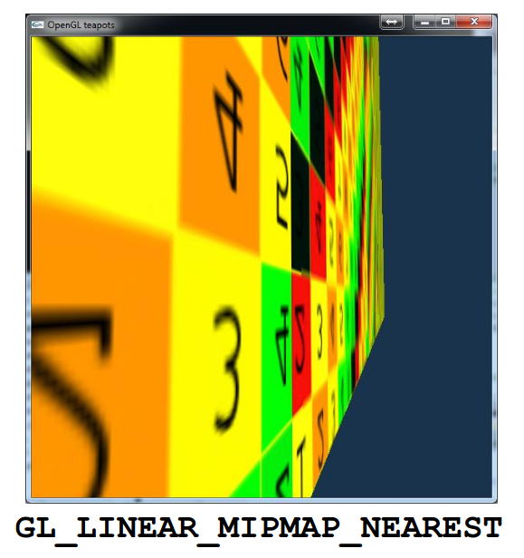
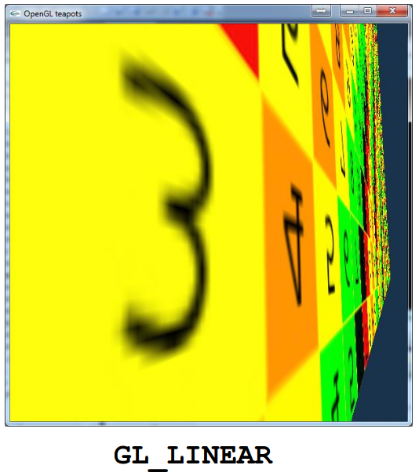
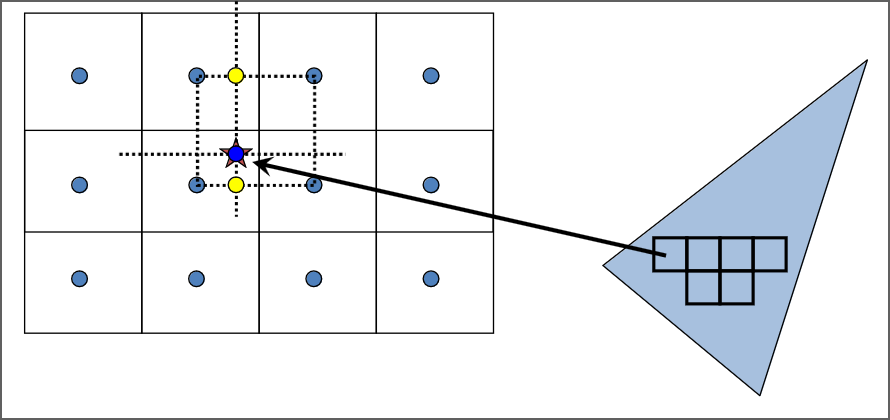
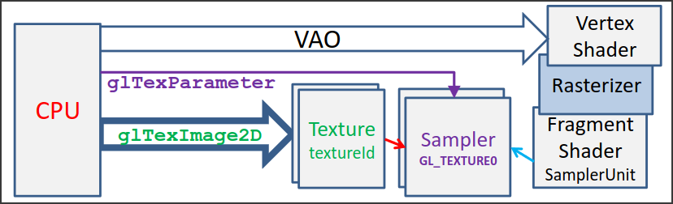

2D Textúrázás
Alapok
Egy kétdimenziós területre vagy egy háromdimenziós felületre szeretnénk egy képet, más szóval tapétát ragasztani. Ez a kép meghatározná a terület vagy felület színét, megjelenését, így akár komplex kinézetű objektumokat is meg tudunk jeleníteni.
Ezt a felületet meg kell feleltetnünk annak a koordináta-rendszernek, amelyben a képet ábrázoljuk. Ezt a koordináta-rendszert textúra koordináta-rendszernek nevezzük, és a \((0,0)\), \((1,1)\) tartományban értelmezzük.
6.1 Definíció (Paraméterezés)
Azt a folyamatot, amikor a felület egyes pontjait leképezzük ebbe az egységnégyzetbe (textúra térbe) paraméterezésnek nevezzük.
Ha a felületünk összes pontja le van képezve ebbe az egységnégyzetbe, és mi "kifestjük" ezt a négyzetet azzal a mintázattal, amit a felületünkre szeretnénk rakni, akkor ezáltal a felületünk pontjait megfeleltettük a mintázat pontjainak, tehát az eredeti felület is ki lesz festve az általunk válaszott mintázattal. Ehhez persze szükségünk lesz a paraméterezés inverzéhez, azaz ahhoz a transzformációhoz, ami a textúra koordináta-rendszer egyes pontjait megfelelteti a geometriánk felületének egyes pontjaival.
A textúrázáshoz használt kép elemei a texelek (mint ahogy a pixel a "picture element"-ből származik, a texel a "texture element"-ből).
A textúrázást elég csak háromszögekre megvalósítani, hiszen az összes többi bonyolultabb felületet háromszögekből építjük fel. Az a célunk, hogy a textúraterünk háromszögeit valahogy megfeleltessük a modellterünk háromszögeivel. A leggyakrabban használt egyik ilyen megfeleltetés a lineáris leképzés.
Lineáris leképzés
A fő ötlet az, hogy "bármely két háromszög között létezik olyan affin transzformáció, ami az egyik háromszöget a másikba viszi át" és ez az affin transzformáció Descartes koordinátákban kifejezve egy lineáris kifejezés, azaz mind \(u\), mind \(v\) elsőfokú hatványokként jelennek meg. Más szóval az a megfeleltetést keressük, ami az \((u,v)\) textúra térbeli koordinátákat megfelelteti a modell térbeli \((x,y,z)\) koordinátáknak, és a kapcsolatuk lineáris, azaz:
alakúak.
Együtthatók meghatározása
Az \(a_x, b_x, \dots\) kilenc darab ismeretlent jelöl, ezeket akarjuk kiszámolni. Mivel a modell térbeli háromszögeknek 3 csúcsa van, amik egyenként 3 koordinátából állnak, és mindegyik megfelel pontosan egy textúra térbeli pontnak, ezért \(3 \cdot 3 = 9\) feltételünk van. A feltételeket úgy kell elképzelni, hogy a fenti képletben az \(x, y, z, u, v\)-k helyére beírjuk azokat a konkrét értékeket, amikkel az adott háromszög adott csúcsa rendelkezik. Ez csúcsonként három, azaz összesen kilenc egyenlet, ahol már csak az \(a_x, b_x, \dots\) együtthatók az ismeretlenek. Kilenc ismeretlen és kilenc feltétel esetén mindig van egyértelmű megoldása az egyenleteknek (hacsak nem elfajult háromszögeink vannak).
Képszintézis
A fentieket felhasználva már van átjárásunk a textúra tér és a modell tér között, viszont nekünk a modell tér és a képernyő koordináta-rendszere között is kell tudnunk transzformálni. A képszintézis a modell háromszögeit áttranszformálja fizikai képernyőkoordinátákba. Ez általánosan egy homogén lineáris transzformáció, azaz a pont koordinátákat homogén koordinátáknak tekintve egy mátrix szorzással kapjuk meg a képernyőkoordináta-rendszerbeli pontokat, mégpedig homogén koordinátás alakban. A homogén osztást elvégezve a konkrét fizikai pixelek koordinátáit kapjuk meg. Ha ezt a folyamatot elvégezzük a háromszög mindhárom csúcsára, akkor megkapjuk a kirajzoláshoz szükséges pixeleket.
Összevonás
A képszintézis egy homogén lineáris transzformáció, a paraméterezés egy affin transzformáció (ami egyben egy homogén lineáris transzformáció is). Ezeket össze lehet vonni egy transzformációvá, így a textúra térből egyenesen a fizikai képernyő koordináta-rendszerbe tudunk váltani. Ez az összevonás is egy homogén lineáris transzformáció. Erre főleg a következő lépésben lesz szükségünk, a raszterizáció során.
Raszterizáció
Ez az a folyamat, amikor a háromszögön belüli pixelekre eldöntjük, hogy a textúra téren belül melyik texel felel meg neki. Ehhez a pixelt vissza kell transzformálnunk a textúra térbe, mert ezt csak ott tudjuk eldönteni. Mivel ezt minden egyes pixelre a háromszögön belül végre kell hajtani, ezért figyelni kell arra, gyors megoldást találjunk. Vezessük le az összevont homogén lineáris transzformációt és annak inverzét:
A textúra térből a képernyőbe
Az összevont homogén lineáris transzformációt a következő alakban fejezhetjük ki:
ahol az \([X,Y,w]\) pixelkoordináták (homogén alakban) az \([u, v, 1]\) textúrakoordinátáknak a homogén lineáris transzformáltjai, mely transzformáció mátrixa \(\mathbf{P}\).
A pixelek kitöltése során persze nem a homogén alakban kell dolgoznunk, a konkrét pixel koordináták kifejezéséhéz el kell végeznünk a homogén osztást:
A képernyő koordinátákból a textúra térbe
Erre a transzformációra van szükségünk a raszterizáció során. Mivel a fentinek az inverze, ezért az alábbi módon vezethető le:
1. Osszunk le \(w\)-vel mindkét oldalon
Itt tudunk picit egyszerűsíteni (homogén osztás miatt \(x_{\text{pix}} = X/w\)):
2. Szorozzuk meg mindkét oldalt balról \(\mathbf{P}\) inverzével
A lényegi részével végeztünk is, annyit tehetünk még, hogy bevezetjük az \(U = u/w, V = v/w, W = 1/w\) jelölést, hogy picit tömörebb legyen a képletünk:
Most már csak hatékonyan ki kéne tudni számolni az \(U, V, W\) koordinátákat, és készen lennénk a raszterizációval. A hatékony kiszámolás érdekében a lineáris interpolációt fogjuk igénybe venni.
Lineáris interpoláció
A raszterizáció során pásztázva meglátogatjuk az összes pixelt a háromszögön belül, és minden pixelre kiszámoljuk a textúra koordinátákat, azok alapján pedig ki tudjuk olvasni, hogy melyik texel kerüljön a pixelünkre.
Az \(U\) (homogén koordinátás textúra koordináta) egy mátrixszorzással kapható meg a pixelkoordinátákból, azaz azoknak egy lineáris függvénye:
A kiszámítása egy pixelre alap esetben két szorzást és két összeadást igényel. Viszont ezt minden pixelre megcsinálni eléggé lassú lenne, ezért az inkrementális elvet fogjuk használni. Ez arra alapul, hogy ha már tudjuk \(U(x,y)\)-t, akkor \(U(x+1, y)\) (a pásztában a következő pixel) kiszámításához fel tudjuk használni az előző pixelt:
így egy pásztán belül az első pixel után minden másik kiszámítása csak egy összeadás. Ugyan ez a logika alkalmazható a \(V, W\) koordinátákra is. Erre van hardver támogatás (interpolációs hardver). Nézzük meg, hogyan kell \(A_u, A_v, \dots\) együtthatókat meghatározni.
Triangle setup
Bármely két háromszög között létezik olyan affin transzformáció, ami az egyik háromszöget a másikba viszi át. Ez az affin transzformáció Descartes koordinátákban kifejezve egy lineáris kifejezés, azaz \(u\) és \(v\) elsőfokú hatványokként szerepelnek. Tehát azt a megfeleltetést keressük, ami az \((u,v)\) textúra térbeli koordinátákat megfelelteti a modell térbeli \((x,y,z)\) koordinátáknak, és a kapcsolatuk lineáris, azaz:
Mivel a háromszögünknek három csúcsa van, ezért három darab ilyen egyenletünk van:
Ezekből \(A_u\) kifejezhető, az alábbi alakban:
Geometriai megközelítés
Annak, hogy \(U\) az \((x,y)\) koordináták lineáris függvénye más következményei is vannak. Ha felveszünk egy olyan háromdimenziós koordináta-rendszert, ahol a tengelyek rendre \(x,y,U\), akkor ebben a koordináta-rendszerben azok az \((x, y, U)\) számhármasok, amik a háromszögeink adatait tartalmazzák, egy síkra kerülnek. Ez látható a sík képletéből is:
Tehát nekünk \(\displaystyle -\frac{n_x}{n_u}\) alakban kell az eredmény, mert az az \(A_u\) megfelelője az interpolációs feltételben. A sík normálvektorát megkaphatjuk úgy, hogy a síkban két nem párhuzamos vektornak vesszük a keresztszorzatát. Mivel a háromszögünk ebben a síkban van, ezért már három pontot ismerünk a síkból. Ebből a három pontból könnyen tudunk két alkalmas vektort képezni, és ezek keresztszorzata pontosan megegyezik a fenti \((1)\) képlettel.
Textúra szűrés
Eljutottunk odáig, hogy minden egyes pixelt hatékonyan át tudunk transzformálni a textúra térbe. Viszont nem triviális, hogy ez alapjan a transzformalt pont alapjan melyik texelt valasztjuk ki. Ez a kivalasztasi folyamat a textura szures. Ennek soran a pixelek kozeppontjait transzformaljuk a textura terbe, es megnezzuk, hogy melyik texel kozeppontjahoz vannak a legkozelebb. Ez a GL_NEAREST (nearest neighbor), más néven matematikai mintavételezés. Ez alapesetben jól működik, viszont két olyan eset is felmerülhet, amikor nekünk ez nem megfelelő:
{kind=link}
1. Magnification

Ha olyan a leképzésünk, hogy sok pixel ugyan ahhoz a texelhez van a legközelebb, akkor a végső képen élesen láthatóak lesznek a pixelek határai. Az sok egymáshoz közeli, de egy texelre eső pixelek azt a hatást fogják kelteni, mintha kevesebb, de nagyobb pixeleink lennének.
2. Minification

A magnification fordítottja bizonyos értelemben: két egymás melletti pixel képe a textúra térben nagyon távol van egymástól, és nagyon sok texel kimarad közöttük. Az elveszett texelek miatt a végső kép zajos lesz, két egymás melletti pixel gyakran erősen eltér (ún. Moiré minta).
OpenGL-ben az alábbi módon lehet beállítani, hogy milyen textúra szűrési eljárást szeretnénk használni:
// A paraméterek értelmezése a következő:
// GL_TEXTURE_2D: Kétdimenziós textúrákkal dolgozunk
// GL_NEAREST: Ezt a szűrési eljárást szeretnénk használni
// GL_TEXTURE_MAG_FILTER: A megadott szűrési eljárást magnification esetén használja
// GL_TEXTURE_MIN_FILTER: A megadott szűrési eljárást minification esetén használja
glTexParameteri(GL_TEXTURE_2D, GL_TEXTURE_MAG_FILTER, GL_NEAREST);
glTexParameteri(GL_TEXTURE_2D, GL_TEXTURE_MIN_FILTER, GL_NEAREST);
Látható, hogy külön meg lehet adni egy eljárást a magnificationre, és a minificationre.
Akkor járunk sikerrel a textúrázás során, ha mindkét fenti esetet megpróbáljuk elkerülni. Ehhez használhatunk szofisztikáltabb textúra szűrési eljárásokat. Pixelenként fixen egyszer tudunk texeleket választani (mintavételezési frekvencia), és a pixelek száma is adott. Viszont a texelek felett több befolyásunk van: ha olyan virtuális texelekkel dolgoznánk, ahol körülbelül egy pixelnek egy texel felelne meg, akkor minden rendben lenne. Nézzük pár ilyen eljárást.
Mip-map (minification ellen)
Ahelyett, hogy csak a pixelünk középpontját képeznénk le, sokkal pontosabb lenne, ha a pixel összes pontját leképeznénk a textúra térbe. Ha ezt tennénk, akkor sokkal pontosabban látnánk, hogy az a pixel a textúra térben pontosan hány texelt ölelne át, ahonnan már már egyszerű lenne a dolgunk. Állítsunk elő az eredeti textúrából egy új változatot. Az eredeti textúra bal felső négy texelét átlagolva kapjuk meg az új textúra bal felső texelét. Ezt az átlagolást a textúra összes texel-négyesére elvégezve kaphatjuk meg az új textúrát. Az eljárás végén egy olyan textúrát kapunk, aminek a felbontása fele az eredeti képnek (ezt úgy is lehet értelmezni, hogy az eredeti textúra térben minden négy texelt lecserélünk egy "nagyobb" texelre). Ha ezt a folyamatot megismételjük az új textúránkon is, akkor elő tudunk állítani több ilyen, mindig feleződő felbontású textúrát (ahol mindegyikben egyre "nagyobbak" a texelek).
Ezen textúrák összesége a mip-map, az adott "szinthez" (azaz hányszor feleztük meg) tartozó textúrák neve pedig LOD (level of detail), és általában számozva vannak (tehát az eredeti képünk a LOD0, az első iteráció utáni a LOD1 stb.). Ezek után elég lenne megkeresni azt a LOD-ot, ahol a leképzett pixelünk mérete körülbelül megfelel egy texelnek, és visszaadni a LOD megfelelő texelét. Így lényegében az összes olyan texel hozzájárul a pixel színéhez, ami alapból ki lett volna hagyva.
Az egyetlen probléma, hogy minden pixel minden egyes pontját leképezni a textúra térbe egy költséges művelet lenne. Ehelyett előre definiált négyszögeket használunk, ezek pedig éppen a LODok texeleinek méretével egyeznek meg: a négyszög méretéből ki tudjuk következtetni, hogy melyik LOD szintet kell használni (azt, ahol nagyjából akkora egy texel, mint az adott négyszög).
Ehhez külön hardware támogatás van, OpenGL-ben az alábbi módon lehet beállítani:
// Mip-mapping
glTexParameteri(GL_TEXTURE_2D, GL_TEXTURE_MIN_FILTER, GL_LINEAR_MIPMAP_NEAREST);
// Tri-linear filtering
glTexParameteri(GL_TEXTURE_2D, GL_TEXTURE_MIN_FILTER, GL_LINEAR_MIPMAP_LINEAR);

Két fajtája is van. A GL_LINEAR_MIPMAP_NEAREST a fent ismertetett módon működik, a GL_LINEAR_MIPMAP_LINEAR pedig egy picit tovább megy: általában a pixel képének mérete a textúra térben nem egyezik meg pontosan egyik LOD texel méretével sem, hanem két LOD közé esik. A GL_LINEAR_MIPMAP_LINEAR mindkét ilyen LOD-ből kiolvassa a texelt, és ezek súlyozott átlagát veszi.
Bi-linear (magnification ellen)

Figyeljük meg, hogy amikor transzformáljuk a pixelünk középpontját a textúra térbe, akkor az nagy eséllyel valahova a texelek középpontjai közé fog esni. A matematikai szűrés során a transzformált ponthoz legközelebbi texelközéppont alapján választunk texelt. Ennél egy pontosabb eredményt kapunk, ha a transzformált ponthoz négy legközelebbi texelközéppontot használjuk fel: képezzük a négy texel súlyozott átlagát, ahol a súlyok az egyes középpontoktól vett távolságok. A név onnan ered, hogy két lineáris interpolációt hajtunk végre: először a 2x2-es texel rácsnál vízszintesen interpoláljuk a texeleket, utána pedig a keletkező két texelt függőlegesen is interpoláljuk.

Az alábbi módon kapcsolható be:
glTexParameteri(GL_TEXTURE_2D, GL_TEXTURE_MAG_FILTER, GL_LINEAR);
Textúrázás a GPU-n
Az elméleti részével készen vagyunk a textúrázásnak, nézzük meg, hogy hogyan tudjuk kódban megvalósítani az itt tárgyaltakat! Az alábbi képen látható a textúrázási csővezeték:

Először átfogóan tárgyaljuk az egész folyamatot, utána az egyes lépéseket részletesebben, kódrészletekkel együtt vizsgáljuk.
Madártávlatból
Mindenekelőtt a GPU textúra memóriájába kell helyeznünk azt a képet, amely a textúra alapját fogja képezni. Ezt CPU oldalról tesszük meg, a glTexImage2D függvénnyel. Szintén CPU oldalról kell a csúcsainkat ellátni a megfelelő textúrakoordináttákkal is, hogy amikor a vertex shaderben definiáljuk a geometriát, akkor az egyes csúcspontokról tudjuk, hogy a textúra térben hova képződnek le (azaz milyen \((U,V,W)\) textúrakoordinátákkal rendelkeznek). A megjelenítési pipeline az általunk definiált VAO-k és VBO-k tartalmát először a vertex shaderen tolja át. A vertex shadernek a textúrakoordinátákat tovább kell adnia a vágás, viewport transzformáció, raszterizálós egység felé. Ha új pontok keletkeznek ezen műveletek során (pl. raszterizáció) akkor a csúcsponttulajdonságokat (így a textúrakoordinátákat is) interpolálni fogják. A fragment shader már ezeket az interpolált értékeket kapja meg. A textúra kiolvasása egy textúra mintavételező egységen (sampler unit) keresztül történik, ez felel például a mip-map vagy a bi-lineáris interpolációkért. Ezt a mintavételező egységet is a CPU-ról állítjuk be a glTexParameter függvénnyel.
Vizsgáljuk picit részletesebben a fent említett egyes lépéseket.
1. Textúra GPU-ra töltése
unsigned int textureId;
void UploadTexture(int width, int height, vector<vec4>& image) {
// Generálunk a textúrához egy azonosítót, amit
// a `textureId` változóban kapunk vissza.
glGenTextures(1, &textureId);
// Bindoljuk is rögtön ezt a textúrát, mert ezzel dolgozunk.
// Lehetnének egy- vagy háromdimenziós textúráink is.
// (mindegyikből egyszerre csak egy lehet aktív)
glBindTexture(GL_TEXTURE_2D, textureId);
// Az utoljára bindolt textúrába átmásoljuk a képünket.
// A függvény paramétereinek magyarázatát a kódrészlet alatt találhatod.
glTexImage2D(GL_TEXTURE_2D, 0, GL_RGBA, width, height, 0,
GL_RGBA, GL_FLOAT, &image[0]); //Texture -> GPU
// Az alábbi két parancs a bindolt textúra mintavételezését állítja be.
// Kicsinyítés esetén GL_NEAREST szűrővel dolgozzon, nagyítás esetén pedig
// GL_LINEAR szűrővel.
glTexParameteri(GL_TEXTURE_2D, GL_TEXTURE_MIN_FILTER, GL_NEAREST);
glTexParameteri(GL_TEXTURE_2D, GL_TEXTURE_MAG_FILTER, GL_LINEAR);
}
Nehéz átlátni a kódot?
Az előző évek videóiban általában sorrol sorra végigmegy a kódon, és elmondja, hogy melyik sor pontosan mit csinál, szóval ha az itteni magyarázatok után esetleg még lennének kérdéses részek, akkor itt meg tudod nézni az ehhez a témához kapcsolódó videót.
A glTexImage2D függvény (nem hivatalos, de a céljainkra megfelelő) paraméterlistája a következő:
glTexImage2D(texture_dim, mip-map_level, texel_format, width, height,
border_size, source_pixel_format, source_type, source_data);
ahol:
texture_dim: A textúra dimenzióját adjuk meg, legtöbbször kétdimenziós a textúránk.mip-map_level: Mip-map-elés esetén az eredeti képen kívül annak a fele akkora, negyed akkora stb. felbontású változatai is szükségesek, és a teljes hierarchiát fel kell tölteni. Ez a paraméter azt adja meg, hogy éppen melyik szinten járunk a feltöltésben. A hierarchia teteje 0.texel_format: A texelek formátumát adja meg. Általában RGB formátumúak, és átlátszóságot is támogathatnak.width, height: A feltöltendő kép szélessége és magassága.border_size: Ez a border méretét adja meg. A borderrel extra texeleket lehet rendelni a kép határához. Ehhez akkor lehet szükség, ha például a bilineáris szűrés esetén a bal felső texelt találjuk el, hiszen ekkor lehet, hogy a "kép fölötti texel" közelebb lenne a pontunkhoz, mint az egy sorral lejjebbi texelek.source_pixel_format, source_type, source_data: A maradék három paraméter a forráskép formátumáról rendelkezik, rendre azon pixeleinek formátuma (RGBA), az értékek típusa (pl. float), és a kép kezdőcímének értéke.
Megemlítendő, hogy itt még nincsen beállítva a konkrét Sampler, szóval amikor a glTexParameteri függvényeket hívtuk, akkor az azokban megadott információt egyelőre maga a textúra tárolja el magáról, és amikor összeköttetésbe kerül a Samplerrel, akkor fogja ezeket a paramétereket delegálni a Sampler felé.
2. A virtuális világ objektumainak felszerelése textúra koordinátákkal
Több módon is eljárhatunk, például stride-ot alkalmazva (ugyan abban a VBO-ban van a Descartes és textúra koordináta, egymás után felváltva) vagy egy VAO-n belül két külön VBO-ban tároljuk az adatainkat: az egyikben a pontok Descartes koordinátái vannak, a másikban pedig az azokhoz tartozó textúrakoordináták. Az alábbi kódrészlet az utóbbit mutatja be:
unsigned int vao, vbo[2];
glGenVertexArrays(1, &vao);
glBindVertexArray(vao);
glGenBuffers(2, vbo); // Generate 2 vertex buffer objects
// vertex coordinates: vbo[0] -> Attrib Array 0 -> vertices
glBindBuffer(GL_ARRAY_BUFFER, vbo[0]);
float vtxs[] = {x1, y1, x2, y2 /*, x3, y3, ... */};
glBufferData(GL_ARRAY_BUFFER, sizeof(vtxs),vtxs, GL_STATIC_DRAW);
glEnableVertexAttribArray(0);
glVertexAttribPointer(0, 2, GL_FLOAT, GL_FALSE, 0, NULL);
// vertex coordinates: vbo[1] -> Attrib Array 1 -> uvs
glBindBuffer(GL_ARRAY_BUFFER, vbo[1]);
float uvs[] = {u1, v1, u2, v2 /*, u3, v3, ... */};
glBufferData(GL_ARRAY_BUFFER, sizeof(uvs), uvs, GL_STATIC_DRAW);
glEnableVertexAttribArray(1);
glVertexAttribPointer(1, 2, GL_FLOAT, GL_FALSE, 0, NULL);
3. A vertex és fragment shaderek
A megjelenítési csővezeték során a VBO-k tartalma először a vertex shaderen megy keresztül:
layout(location = 0) in vec2 vtxPos;
layout(location = 1) in vec2 vtxUV;
out vec2 texcoord;
void main() {
gl_Position = vec4(vtxPos, 0, 1) * MVP;
texcoord = vtxUV;
// ...
}
Ezután a raszterizáció és interpoláció után megérkezünk a fragment shaderhez (fontos, hogy ugyan olyan névvel kell hivatkozni a textúrakoordinátákra mint a vertex shaderben):
uniform sampler2D samplerUnit;
in vec2 texcoord;
out vec4 fragmentColor;
void main() {
fragmentColor = texture(samplerUnit, texcoord);
}
Itt fontos megemlíteni a samplerUnit változót: a fragment shader nem egyenesen a képet látja, hanem a Sampleren keresztül kapja meg a pixelek színeit. A texture függvény elvégzi a szűrést a Sampler beállításai alapján, és a megadott textúrakoordinátát kiolvassa.
4. Az aktív textúra, és a Sampler
Még nem kapcsoltuk össze a Samplert az aktív textúránkkal, de ezt rögtön orvosoljuk:
unsigned int textureId;
void Draw( ) {
int sampler = 0; // which sampler unit should be used
int location = glGetUniformLocation(shaderProg, "samplerUnit");
glUniform1i(location, sampler);
glActiveTexture(GL_TEXTURE0 + sampler); // = GL_TEXTURE0
glBindTexture(GL_TEXTURE_2D, textureId);
glBindVertexArray(vao);
glDrawArrays(GL_TRIANGLES, 0, nVtx);
}
Kitekintés
A további elmélyüléshez ajánlani tudjuk ezt a shaderezésben, illetve textúrázásban segítő külsős videót.
Kvíz
1. glTexParameteri(GL_TEXTURE_2D, melyik, milyen) OpenGL függvényre vonatkozóan válasszuk ki az alábbi állítások közül az igaz állításokat.
- A milyen=
GL_LINEARbi-lineáris interpolációt kapcsol be. - A milyen=
GL_LINEAResetén a szín az \(u,v\) textúrakoordináták lineáris függvénye, azaz \(au + bv + c\) alakú. - A milyen=
GL_NEAREST-nél nagyításnál, és kicsinyítésnél is van jobb megoldás. - A milyen=
GL_LINEAResetén a rajzolás négyszer lassabb, mint a milyen=GL_NEAREST-nél. - A milyen=
GL_LINEAR_MIPMAP_NEARESTmindig jó, ha a textúrát a egyetlenglTexImage2D(GL_TEXTURE_2D, 0, GL_RGBA, width, height, 0, GL_RGBA, GL_FLOAT, &image[0]);hívással töltöttük fel a textúrát. - A milyen=
GL_LINEAResetén a textúrázandó képnek csak a 0-as szintjét kell feltölteni.
Megoldás
- A milyen=
GL_LINEARbi-lineáris interpolációt kapcsol be. - A milyen=
GL_LINEAResetén a szín az \(u,v\) textúrakoordináták lineáris függvénye, azaz \(au + bv + c\) alakú. - A milyen=
GL_NEAREST-nél nagyításnál, és kicsinyítésnél is van jobb megoldás.- Magyarázat: Magnification esetén
GL_LINEAR, minification eseténGL_LINEAR_MIPMAP_NEAREST.
- Magyarázat: Magnification esetén
- A milyen=
GL_LINEAResetén a rajzolás négyszer lassabb, mint a milyen=GL_NEAREST-nél. - A milyen=
GL_LINEAR_MIPMAP_NEARESTmindig jó, ha a textúrát a egyetlenglTexImage2D(GL_TEXTURE_2D, 0, GL_RGBA, width, height, 0, GL_RGBA, GL_FLOAT, &image[0]);hívással töltöttük fel a textúrát.- Magyarázat: Csak minification esetén jó.
- A milyen=
GL_LINEAResetén a textúrázandó képnek csak a 0-as szintjét kell feltölteni.- Magyarázat: Feltételezem a mip-map szintre utal a kérdés, aminek csak
GL_LINEAR_MIPMAP_NEARESTesetében van értelme.
- Magyarázat: Feltételezem a mip-map szintre utal a kérdés, aminek csak
2. Jelöljük be az glTexImage2D(target, 0, GL_RGBA, w, h, 0, GL_RGBA, GL_FLOAT, address); utasítással kapcsolatos igaz állításokat.
- A harmadik,
GL_RGBAparaméter azt fejezi ki, hogy a feltöltendő tömbben egy texelt a három színcsatornán és átlátszósággal adunk meg. - A \(w\) és \(h\) paraméterek csak \(2\) hatványok lehetnek.
- A
glTexImage2Dfüggvénnyel kell feltölteni akkor is a textúrát, ha mip-map-elést szeretnénk, de többször kell meghívni ezt a függvényt. - A
GL_FLOATutolsó előtti paraméter az írja elő, hogy a GPU memóriában a texelek lebegőpontos formátumban tárolódjanak. - Az address azon CPU memóriaterület kezdőcíme, ahonnan a GPU-ra az adatokat átmásoljuk.
- Az OpenGL-nek nem lehet unsigned char textúrákat átadni. (lehet csak elég retro lesz)
- A target lehet
GL_TEXTURE_2D, ami azt jelenti, hogy az utoljára aGL_TEXTURE_2D-hez bindolt textúrát töltjük éppen fel. - A második,
0paraméter azt jelenti, hogy a texelek hézagmentesen vannak a textúrában.
Megoldás
- A harmadik, GL_RGBA paraméter azt fejezi ki, hogy a feltöltendő tömbben egy texelt a három színcsatornán és átlátszósággal adunk meg.
- Magyarázat: Nem a feltöltendő tömbre vonatkozik, hanem a képre amit megadunk neki
- A \(w\) és \(h\) paraméterek csak \(2\) hatványok lehetnek.
- Magyarázat: Ezek a képünk méretei, amikre nincsen ilyen limitáció.
- A
glTexImage2Dfüggvénnyel kell feltölteni akkor is a textúrát, ha mip-map-elést szeretnénk, de többször kell meghívni ezt a függvényt.- Magyarázat: Mivel a különböző LOD-kat nekünk kell feltölteni, ezért többször meg kell hívni.
- A
GL_FLOATutolsó előtti paraméter az írja elő, hogy a GPU memóriában a texelek lebegőpontos formátumban tárolódjanak.- Magyarázat: Ez a paraméter a feltöltendő képre vonatkozik, nem a texelekre.
- Az address azon CPU memóriaterület kezdőcíme, ahonnan a GPU-ra az adatokat átmásoljuk.
- Magyarázat: Lásd fentebb.
- Az OpenGL-nek nem lehet unsigned char textúrákat átadni.
- Magyarázat: Egy
void *-ot vár aglTexImage2Dfüggvény, szóval bármit oda lehet neki adni.
- Magyarázat: Egy
- A target lehet
GL_TEXTURE_2D, ami azt jelenti, hogy az utoljára aGL_TEXTURE_2D-hez bindolt textúrát töltjük éppen fel.- Magyarázat: Lásd fentebb.
- A második,
0paraméter azt jelenti, hogy a texelek hézagmentesen vannak a textúrában.- Magyarázat: A textúra mip-map szintjét adja meg.
3. Tekintsük az alábbi pixel shader programot:
uniform sampler2D samplerUnit;
in vec2 texcoord;
out vec4 fragmentColor;
void main() {
fragmentColor = texture(samplerUnit, texcoord);
}
- A
fragmentColorváltozówmezője automatikusan1értékű lesz. - A
samplerUnitváltozót értékét aglGenTexturesfüggvénnyel kell létrehozni. - A
texture(samplerUnit, texcoord)azon texel színét adja vissza mindig, amelyhez a texcoord a legközelebb van. - A program változatlanul használható
glTexParameteri(GL_TEXTURE_2D, GL_TEXTURE_MIN_FILTER, GL_NEAREST);beállítás ésglTexParameteri(GL_TEXTURE_2D, GL_TEXTURE_MAG_FILTER, GL_LINEAR);beállításnál is.
Megoldás
- A
fragmentColorváltozówmezője automatikusan1értékű lesz.- Magyarázat: Ez általában az alpha csatorna és külön értéke lehet.
- A
samplerUnitváltozót értékét aglGenTexturesfüggvénnyel kell létrehozni.- Magyarázat: Lásd fentebb.
- A
texture(samplerUnit, texcoord)azon texel színét adja vissza mindig, amelyhez a texcoord a legközelebb van.- Magyarázat: Attól függ, hogy milyen paramétereket adtunk meg a Samplernek, lásd fentebb
- A program változatlanul használható
glTexParameteri(GL_TEXTURE_2D, GL_TEXTURE_MIN_FILTER, GL_NEAREST);beállítás ésglTexParameteri(GL_TEXTURE_2D, GL_TEXTURE_MAG_FILTER, GL_LINEAR);beállításnál is.- Magyarázat: Ezeket a beállításokat a Sampler kezeli, nekünk nem kell a shaderben foglalkozni velük.
4. Egy háromszög három csúcsa a modellezési koordináta-rendszerben, valamint a textúra térben:
Az MVP transzformációs mátrix:
Hogyan függ az \(x_{\text{pix}}\), \(y_{\text{pix}}\) a textúrakoordinátától, ha glViewport(0, 0, 1000, 1000)-t hívtunk?
Megoldás
Idézzük fel, hogy
A feladatunk az együtthatók meghatározása. A megadott koordinátákat behelyettesítve:
- \((0,0,-1) \rightarrow (0,0)\)
- \((0,1,-0.5) \rightarrow (0,1)\)
- \((1,0,-0.5) \rightarrow (1,0)\)
Összegezve:
Tudjuk, hogy
illetve
Elvégezve a mátrix szorzást és a homogén osztást, azt kapjuk, hogy
A legutolsó lépés a viewport transzformáció:
Mivel glViewport(0, 0, 1000, 1000)-t hívtunk, ezért \(v_x = v_y = 0\) és \(v_w = v_h = 1000\).
Behelyettesítve, és a kvíz által kért alakra hozva: